Site walkthrough: design options
Package C of the 2026-11-14 walkthrough. Every image is rendered from the real page of the current production build with the option applied on top; nothing here is implemented yet. Each item has two or three options, the recommended one is framed in green, and the choice is yours. Click an image to open it at full size.
H02 · H03 · H04Homepage with all three recommendations
The recommended options for the three homepage items together: the new label and pool, cards instead of arrows and a counter, and a second button to the learning overview.
H02Homepage selection: pool, label, rotation
Settled: a rotating selection from a curated pool of attractive demonstrations. Three details to choose.
Pool (recommended): the nine demonstrations you named as positive references. Convexity and concavity joins once its capture animates smoothly (G06). The pool is one list in the code, so the graphs session can add entries as captures improve.
Epicikli
Negibna točka in iteracija
Akumulirani integral
Določeni integral
Inverzna funkcija in logaritem
Kompleksno množenje
Subdivizija
Darbouxove vsote
De Casteljau
| Label | |
|---|
| Izbor demonstracij / A selection of demonstrations recommended | Says it is a sample, and cannot be read as "chosen by you". |
| Izbrane demonstracije / Featured demonstrations | Familiar wording; "izbrane" can read as the visitor's own selection. |
| Za pokušino / A taste | Warmer and informal; less clear to a screen-reader user as a region name. |
| Rotation | |
|---|
| Six at random per visit recommended | Each full page load draws six of the pool in random order. The set stays the same while moving around the site and back to Home, so Back returns to what you saw. Nothing is stored. |
| One set per day | Everyone sees the same six on the same day, which suits a classroom ("open the third one"); a reload never changes it. |
| Whole pool, shuffled | All nine cards every time in random order; the card row then scrolls sideways again. |
H03Carousel navigation
CurrentArrows and a counter between the preview and a strip of small tiles.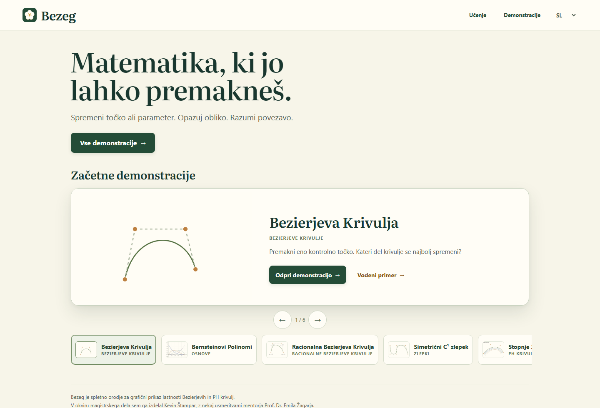
A. Cards are the navigationrecommendedNo arrows, no counter. Six picture cards fill the row; the selected card carries a progress line while the selection advances by itself.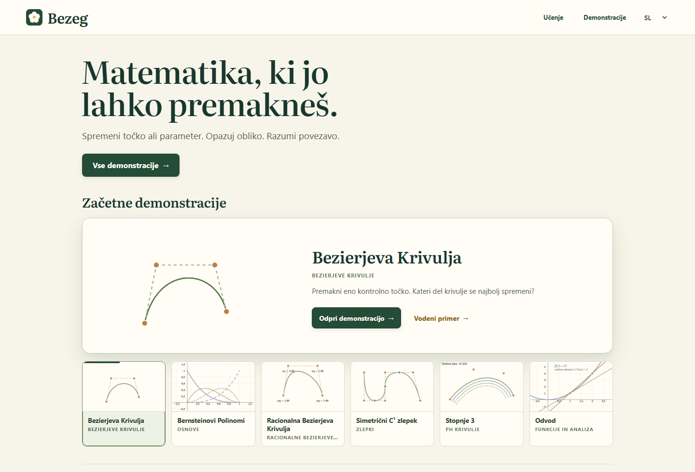
B. Arrows on the preview's edgesNo counter; quiet arrows sit on the large card. The tile strip stays as it is.
C. Only removeArrows and counter removed, tiles unchanged.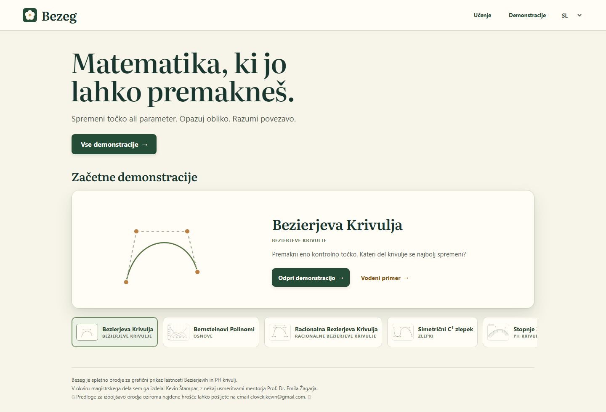
Why A: it is the direction you suggested, and the cards then show what each demonstration looks like, which the 52 px thumbnails cannot. Keyboard arrow keys keep working in every option. Cost: the row is taller, so at 1440 × 900 its lower edge falls just below the first screen.
H04Route to the learning overview
Current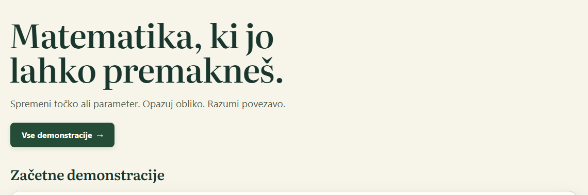
A. Two buttonsrecommended"Vsa učna vsebina" beside "Vse demonstracije", the same wording as the chapter return control.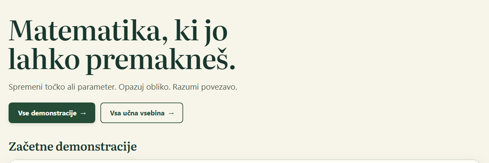
B. Two doorsLarger cards with a line about what is behind each.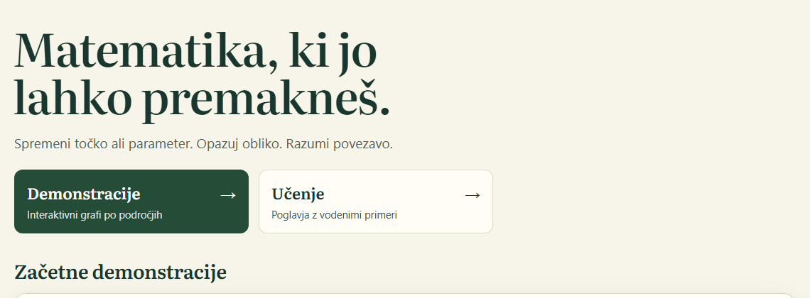
Why A: it answers the request with the least weight and keeps the selection high on the first screen. B explains more but pushes the carousel further down and competes with it.
L01Chapter section numbering
Left: Bézier curves (numbered today). Right: Convexity and hulls, one of the chapters that are not numbered today.
A. No numbers anywhere
B. Numbers everywhererecommendedHeading number and contents number in every chapter.
C. Numbers in the contents list onlyHeadings stay clean.
Why B: a number ties each heading to its line in the contents list and gives a teacher something to say aloud ("razdelek 4"). It comes from the shared chapter presentation, so no chapter can drift again.
L04Guided example Back button
CurrentSolid white on the cream panel.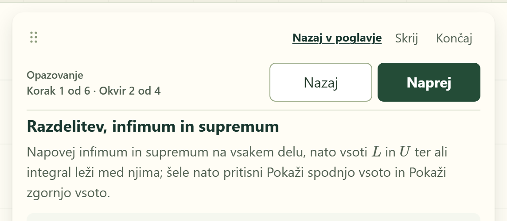
B. Sage tintrecommendedThe tint the panel already uses for its formula and note boxes.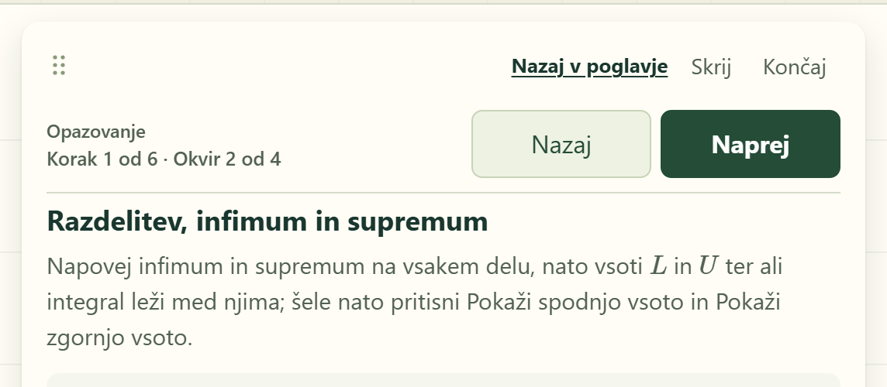
A. Outline onlyTransparent, the panel shows through.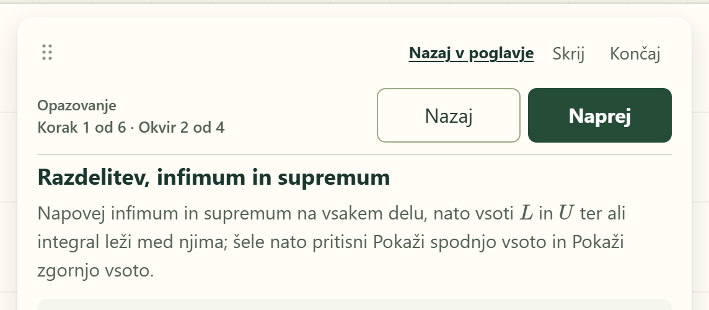
C. Quiet textNo frame, like "Skrij" and "Končaj" above it.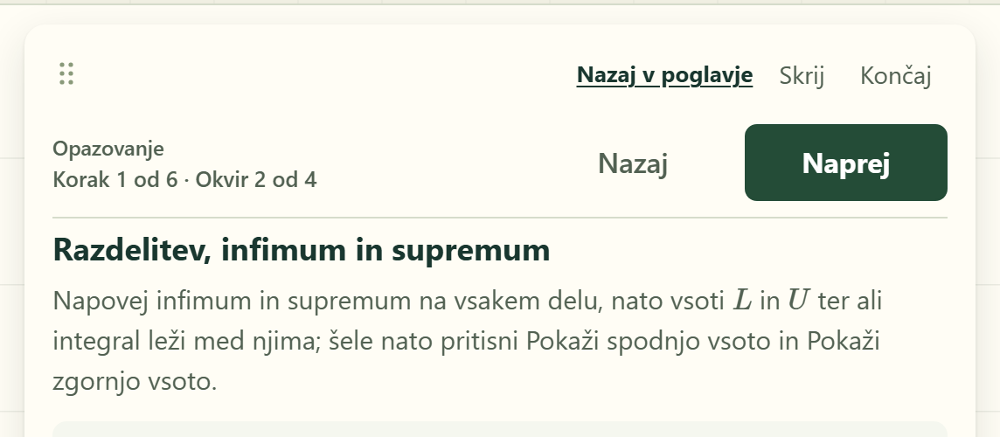
Why B: it keeps the placement and the frame you like and replaces the white with a colour already in the panel. A is almost indistinguishable from today, because the panel itself is nearly white. C loses the frame.
L05Side botanicals on chapter reading pages
Settled: they appear. Shown at 2560 × 1300 on Bézier curves. The detail to choose is their strength.
Why A: you said the existing decoration is not distracting, and one treatment across the site is simpler. The branches stay outside the contents list and the margin notes; below 1600 px nothing is drawn, as today.
P01Save-preset dialog
Current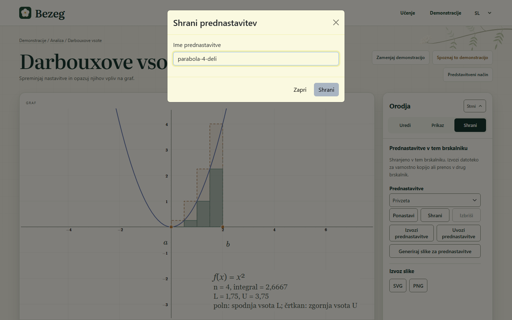
A. Dialog in the site's stylerecommendedCream panel, title in the display face, green action, "Prekliči", and a line saying what saving does.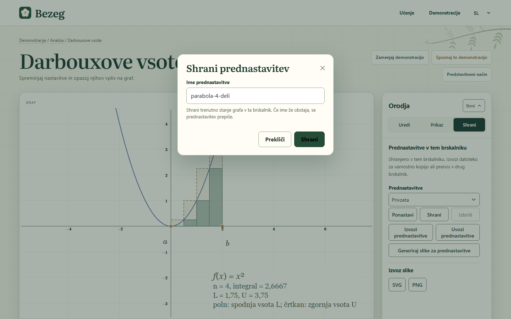
B. No dialog: save in the panelThe name field opens in the Shrani tab; the graph stays uncovered.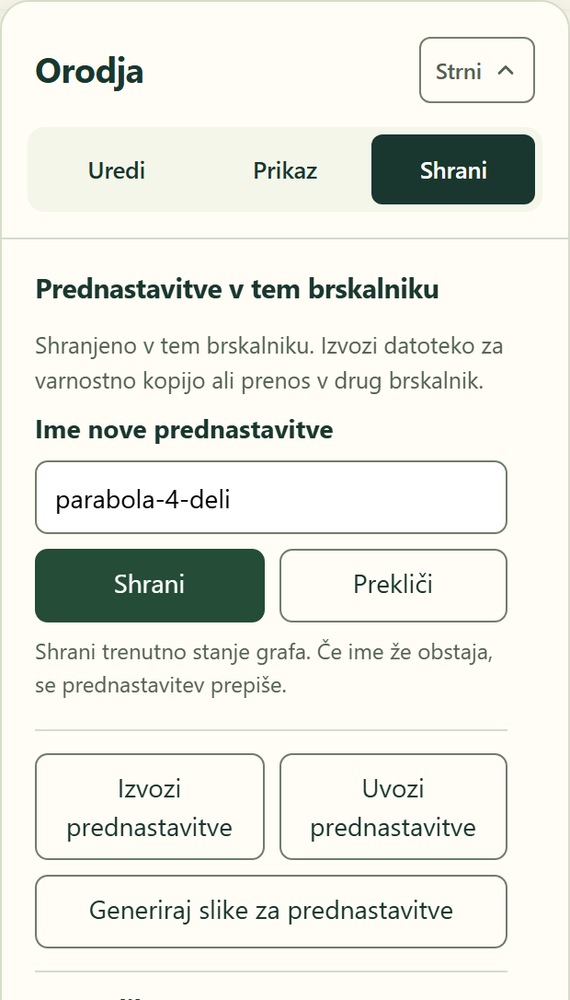
Why A: the same style then covers all four preset dialogs (save, delete, import, figure batch) in one change. B is the better long-term direction and is part of the P02 proposal below.
P02Presets panel
Today the panel is a dropdown and six equal buttons. The proposal lists saved states as rows, makes saving the one prominent action, puts rename, overwrite and delete in each row's menu, and separates backup (export and import of a file). The figure batch moves beside the image export below. Stored presets keep their current shape, so existing presets and exported files still load.
Also yours to choose: whether the user-facing word changes from "prednastavitve" (presets) to "shranjena stanja" (saved states), as the mockup shows. It describes what a student actually saves; the file format and the code keep "preset".
G07Epicycles subject
Four candidates, each traced with 6, 20 and 60 circles to show how the approximation improves. The subject is your choice; the graphs session implements it.
Notes: the cat and Slovenia show the largest difference between few and many circles, which is the point of the example. The treble clef is recognizable already at 20. The blossom ties to the site's identity but is too easy: six circles nearly finish it. The Slovenia outline here is a rough sketch.